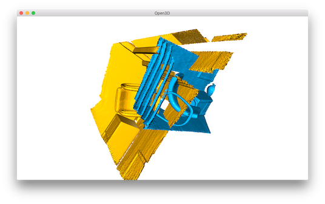
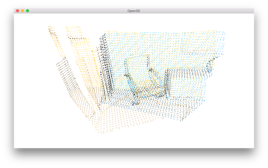
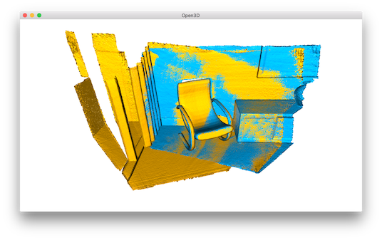

Global registration¶
Both ICP registration and Colored point cloud registration are known as local registration methods because they rely on a rough alignment as initialization. This tutorial shows another class of registration methods, known as global registration. This family of algorithms do not require an alignment for initialization. They usually produce less tight alignment results and are used as initialization of the local methods.
5 6 7 8 9 10 11 12 13 14 15 16 17 18 19 20 21 22 23 24 25 26 27 28 29 30 31 32 33 34 35 36 37 38 39 40 41 42 43 44 45 46 47 48 49 50 51 52 53 54 55 56 57 58 59 60 61 62 63 64 65 66 67 68 69 70 71 72 73 74 75 76 77 78 79 80 81 82 83 84 85 86 87 88 89 90 91 92 93 94 | # examples/Python/Advanced/global_registration.py
import open3d as o3d
import numpy as np
import copy
def draw_registration_result(source, target, transformation):
source_temp = copy.deepcopy(source)
target_temp = copy.deepcopy(target)
source_temp.paint_uniform_color([1, 0.706, 0])
target_temp.paint_uniform_color([0, 0.651, 0.929])
source_temp.transform(transformation)
o3d.visualization.draw_geometries([source_temp, target_temp])
def preprocess_point_cloud(pcd, voxel_size):
print(":: Downsample with a voxel size %.3f." % voxel_size)
pcd_down = pcd.voxel_down_sample(voxel_size)
radius_normal = voxel_size * 2
print(":: Estimate normal with search radius %.3f." % radius_normal)
pcd_down.estimate_normals(
o3d.geometry.KDTreeSearchParamHybrid(radius=radius_normal, max_nn=30))
radius_feature = voxel_size * 5
print(":: Compute FPFH feature with search radius %.3f." % radius_feature)
pcd_fpfh = o3d.registration.compute_fpfh_feature(
pcd_down,
o3d.geometry.KDTreeSearchParamHybrid(radius=radius_feature, max_nn=100))
return pcd_down, pcd_fpfh
def prepare_dataset(voxel_size):
print(":: Load two point clouds and disturb initial pose.")
source = o3d.io.read_point_cloud("../../TestData/ICP/cloud_bin_0.pcd")
target = o3d.io.read_point_cloud("../../TestData/ICP/cloud_bin_1.pcd")
trans_init = np.asarray([[0.0, 0.0, 1.0, 0.0], [1.0, 0.0, 0.0, 0.0],
[0.0, 1.0, 0.0, 0.0], [0.0, 0.0, 0.0, 1.0]])
source.transform(trans_init)
draw_registration_result(source, target, np.identity(4))
source_down, source_fpfh = preprocess_point_cloud(source, voxel_size)
target_down, target_fpfh = preprocess_point_cloud(target, voxel_size)
return source, target, source_down, target_down, source_fpfh, target_fpfh
def execute_global_registration(source_down, target_down, source_fpfh,
target_fpfh, voxel_size):
distance_threshold = voxel_size * 1.5
print(":: RANSAC registration on downsampled point clouds.")
print(" Since the downsampling voxel size is %.3f," % voxel_size)
print(" we use a liberal distance threshold %.3f." % distance_threshold)
result = o3d.registration.registration_ransac_based_on_feature_matching(
source_down, target_down, source_fpfh, target_fpfh, distance_threshold,
o3d.registration.TransformationEstimationPointToPoint(False), 4, [
o3d.registration.CorrespondenceCheckerBasedOnEdgeLength(0.9),
o3d.registration.CorrespondenceCheckerBasedOnDistance(
distance_threshold)
], o3d.registration.RANSACConvergenceCriteria(4000000, 500))
return result
def refine_registration(source, target, source_fpfh, target_fpfh, voxel_size):
distance_threshold = voxel_size * 0.4
print(":: Point-to-plane ICP registration is applied on original point")
print(" clouds to refine the alignment. This time we use a strict")
print(" distance threshold %.3f." % distance_threshold)
result = o3d.registration.registration_icp(
source, target, distance_threshold, result_ransac.transformation,
o3d.registration.TransformationEstimationPointToPlane())
return result
if __name__ == "__main__":
voxel_size = 0.05 # means 5cm for the dataset
source, target, source_down, target_down, source_fpfh, target_fpfh = \
prepare_dataset(voxel_size)
result_ransac = execute_global_registration(source_down, target_down,
source_fpfh, target_fpfh,
voxel_size)
print(result_ransac)
draw_registration_result(source_down, target_down,
result_ransac.transformation)
result_icp = refine_registration(source, target, source_fpfh, target_fpfh,
voxel_size)
print(result_icp)
draw_registration_result(source, target, result_icp.transformation)
|
Input¶
39 40 41 42 43 44 45 46 47 48 49 50 | print(":: Load two point clouds and disturb initial pose.")
source = o3d.io.read_point_cloud("../../TestData/ICP/cloud_bin_0.pcd")
target = o3d.io.read_point_cloud("../../TestData/ICP/cloud_bin_1.pcd")
trans_init = np.asarray([[0.0, 0.0, 1.0, 0.0], [1.0, 0.0, 0.0, 0.0],
[0.0, 1.0, 0.0, 0.0], [0.0, 0.0, 0.0, 1.0]])
source.transform(trans_init)
draw_registration_result(source, target, np.identity(4))
source_down, source_fpfh = preprocess_point_cloud(source, voxel_size)
target_down, target_fpfh = preprocess_point_cloud(target, voxel_size)
return source, target, source_down, target_down, source_fpfh, target_fpfh
|
This script reads a source point cloud and a target point cloud from two files. They are misaligned with an identity matrix as transformation.
{kind=link}
Extract geometric feature¶
21 22 23 24 25 26 27 28 29 30 31 32 33 34 35 36 | def preprocess_point_cloud(pcd, voxel_size):
print(":: Downsample with a voxel size %.3f." % voxel_size)
pcd_down = pcd.voxel_down_sample(voxel_size)
radius_normal = voxel_size * 2
print(":: Estimate normal with search radius %.3f." % radius_normal)
pcd_down.estimate_normals(
o3d.geometry.KDTreeSearchParamHybrid(radius=radius_normal, max_nn=30))
radius_feature = voxel_size * 5
print(":: Compute FPFH feature with search radius %.3f." % radius_feature)
pcd_fpfh = o3d.registration.compute_fpfh_feature(
pcd_down,
o3d.geometry.KDTreeSearchParamHybrid(radius=radius_feature, max_nn=100))
return pcd_down, pcd_fpfh
|
We down sample the point cloud, estimate normals, then compute a FPFH feature for each point. The FPFH feature is a 33-dimensional vector that describes the local geometric property of a point. A nearest neighbor query in the 33-dimensinal space can return points with similar local geometric structures. See [Rasu2009] for details.
RANSAC¶
53 54 55 56 57 58 59 60 61 62 63 64 65 66 | def execute_global_registration(source_down, target_down, source_fpfh,
target_fpfh, voxel_size):
distance_threshold = voxel_size * 1.5
print(":: RANSAC registration on downsampled point clouds.")
print(" Since the downsampling voxel size is %.3f," % voxel_size)
print(" we use a liberal distance threshold %.3f." % distance_threshold)
result = o3d.registration.registration_ransac_based_on_feature_matching(
source_down, target_down, source_fpfh, target_fpfh, distance_threshold,
o3d.registration.TransformationEstimationPointToPoint(False), 4, [
o3d.registration.CorrespondenceCheckerBasedOnEdgeLength(0.9),
o3d.registration.CorrespondenceCheckerBasedOnDistance(
distance_threshold)
], o3d.registration.RANSACConvergenceCriteria(4000000, 500))
return result
|
We use RANSAC for global registration. In each RANSAC iteration, ransac_n random points are picked from the source point cloud. Their corresponding points in the target point cloud are detected by querying the nearest neighbor in the 33-dimensional FPFH feature space. A pruning step takes fast pruning algorithms to quickly reject false matches early.
Open3D provides the following pruning algorithms:
CorrespondenceCheckerBasedOnDistancechecks if aligned point clouds are close (less than specified threshold).CorrespondenceCheckerBasedOnEdgeLengthchecks if the lengths of any two arbitrary edges (line formed by two vertices) individually drawn from source and target correspondences are similar. This tutorial checks that \(||edge_{source}|| > 0.9 \times ||edge_{target}||\) and \(||edge_{target}|| > 0.9 \times ||edge_{source}||\) are true.CorrespondenceCheckerBasedOnNormalconsiders vertex normal affinity of any correspondences. It computes dot product of two normal vectors. It takes radian value for the threshold.
Only matches that pass the pruning step are used to compute a transformation, which is validated on the entire point cloud. The core function is registration_ransac_based_on_feature_matching. The most important hyperparameter of this function is RANSACConvergenceCriteria. It defines the maximum number of RANSAC iterations and the maximum number of validation steps. The larger these two numbers are, the more accurate the result is, but also the more time the algorithm takes.
We set the RANSAC parameters based on the empirical value provided by [Choi2015]. The result is
{kind=link}
Note
Open3D provides faster implementation for global registration. Please refer Fast global registration.
Local refinement¶
For performance reason, the global registration is only performed on a heavily down-sampled point cloud. The result is also not tight. We use Point-to-plane ICP to further refine the alignment.
69 70 71 72 73 74 75 76 77 | def refine_registration(source, target, source_fpfh, target_fpfh, voxel_size):
distance_threshold = voxel_size * 0.4
print(":: Point-to-plane ICP registration is applied on original point")
print(" clouds to refine the alignment. This time we use a strict")
print(" distance threshold %.3f." % distance_threshold)
result = o3d.registration.registration_icp(
source, target, distance_threshold, result_ransac.transformation,
o3d.registration.TransformationEstimationPointToPlane())
return result
|
Outputs a tight alignment. This summarizes a complete pairwise registration workflow.
{kind=link}